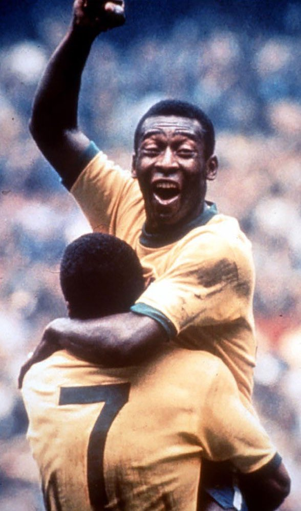
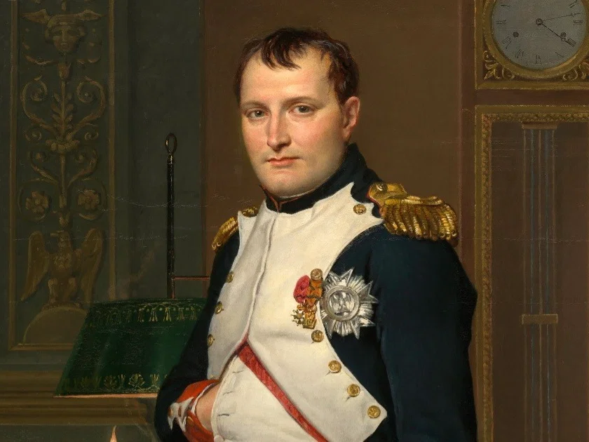

Edson Arantes do Nascimento (Pelé)
O Rei do Futebol não apenas jogou; ele parou guerras e unificou nações através do esporte. Com três títulos mundiais, sua trajetória é o pilar da história esportiva do século XX.


O Rei do Futebol não apenas jogou; ele parou guerras e unificou nações através do esporte. Com três títulos mundiais, sua trajetória é o pilar da história esportiva do século XX.

O general que QUASE conquistou toda a Europa! Além das conquistas militares, seu legado jurídico influenciou as constituições de diversos países modernos, incluindo o Brasil.

Construções que desafiam o tempo e a engenharia moderna. Feitas para durar a eternidade, guardam segredos sobre astronomia e matemática da civilização egípcia.

A Guerra da Lagosta teve início na década de 1960, quando pescadores franceses começaram a capturar crustáceos na costa de Pernambuco sob a alegação de que estavam em águas internacionais. O governo brasileiro reagiu prontamente, enviando navios de guerra para interceptar as embarcações estrangeiras e defender a soberania nacional sobre sua plataforma continental. O impasse escalou para um debate biológico e jurídico inusitado sobre se as lagostas "nadavam" como peixes ou "caminhavam" sobre o solo marinho brasileiro.